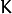
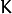

Boosting¶
A common machine learning task is supervised learning. In supervised learning, the goal is to learn the functional relationship
between the input
 and the output
and the output
 . Predicting the qualitative output is called classification, while predicting the quantitative output is called regression.
. Predicting the qualitative output is called classification, while predicting the quantitative output is called regression.
Boosting is a powerful learning concept that provides a solution to the supervised classification learning task. It combines the performance of many “weak” classifiers to produce a powerful committee [HTF01]. A weak classifier is only required to be better than chance, and thus can be very simple and computationally inexpensive. However, many of them smartly combine results to a strong classifier that often outperforms most “monolithic” strong classifiers such as SVMs and Neural Networks.
Decision trees are the most popular weak classifiers used in boosting schemes. Often the simplest decision trees with only a single split node per tree (called stumps ) are sufficient.
The boosted model is based on
 training examples
with
and
.
is a
 -component vector. Each component encodes a feature relevant to the learning task at hand. The desired two-class output is encoded as -1 and +1.
training examples
with
and
.
is a
 -component vector. Each component encodes a feature relevant to the learning task at hand. The desired two-class output is encoded as -1 and +1.
Different variants of boosting are known as Discrete Adaboost, Real AdaBoost, LogitBoost, and Gentle AdaBoost [FHT98]. All of them are very similar in their overall structure. Therefore, this chapter focuses only on the standard two-class Discrete AdaBoost algorithm, outlined below. Initially the same weight is assigned to each sample (step 2). Then, a weak classifier
is trained on the weighted training data (step 3a). Its weighted training error and scaling factor
is computed (step 3b). The weights are increased for training samples that have been misclassified (step 3c). All weights are then normalized, and the process of finding the next weak classifier continues for another
 -1 times. The final classifier
is the sign of the weighted sum over the individual weak classifiers (step 4).
-1 times. The final classifier
is the sign of the weighted sum over the individual weak classifiers (step 4).
Two-class Discrete AdaBoost Algorithm
Set
examples
with
.Assign weights as .
Repeat for :
3.1. Fit the classifier , using weights on the training data.
3.2. Compute .
3.3. Set and renormalize so that .
Classify new samples x using the formula: .
Note
Similar to the classical boosting methods, the current implementation supports two-class classifiers only. For M > 2 classes, there is the AdaBoost.MH algorithm (described in [FHT98]) that reduces the problem to the two-class problem, yet with a much larger training set.
To reduce computation time for boosted models without substantially losing accuracy, the influence trimming technique can be employed. As the training algorithm proceeds and the number of trees in the ensemble is increased, a larger number of the training samples are classified correctly and with increasing confidence, thereby those samples receive smaller weights on the subsequent iterations. Examples with a very low relative weight have a small impact on the weak classifier training. Thus, such examples may be excluded during the weak classifier training without having much effect on the induced classifier. This process is controlled with the weight_trim_rate parameter. Only examples with the summary fraction weight_trim_rate of the total weight mass are used in the weak classifier training. Note that the weights for all training examples are recomputed at each training iteration. Examples deleted at a particular iteration may be used again for learning some of the weak classifiers further [FHT98].
| [HTF01] | Hastie, T., Tibshirani, R., Friedman, J. H. The Elements of Statistical Learning: Data Mining, Inference, and Prediction. Springer Series in Statistics. 2001. |
| [FHT98] | (1, 2, 3) Friedman, J. H., Hastie, T. and Tibshirani, R. Additive Logistic Regression: a Statistical View of Boosting. Technical Report, Dept. of Statistics*, Stanford University, 1998. |
CvBoostParams¶
- struct CvBoostParams : public CvDTreeParams¶
Boosting training parameters.
There is one structure member that you can set directly:
- int split_criteria¶
Splitting criteria used to choose optimal splits during a weak tree construction. Possible values are:
- CvBoost::DEFAULT Use the default for the particular boosting method, see below.
- CvBoost::GINI Use Gini index. This is default option for Real AdaBoost; may be also used for Discrete AdaBoost.
- CvBoost::MISCLASS Use misclassification rate. This is default option for Discrete AdaBoost; may be also used for Real AdaBoost.
- CvBoost::SQERR Use least squares criteria. This is default and the only option for LogitBoost and Gentle AdaBoost.
The structure is derived from CvDTreeParams but not all of the decision tree parameters are supported. In particular, cross-validation is not supported.
All parameters are public. You can initialize them by a constructor and then override some of them directly if you want.
CvBoostParams::CvBoostParams¶
The constructors.
- C++: CvBoostParams::CvBoostParams()¶
- C++: CvBoostParams::CvBoostParams(int boost_type, int weak_count, double weight_trim_rate, int max_depth, bool use_surrogates, const float* priors)¶
Parameters: - boost_type –
Type of the boosting algorithm. Possible values are:
- CvBoost::DISCRETE Discrete AdaBoost.
- CvBoost::REAL Real AdaBoost. It is a technique that utilizes confidence-rated predictions and works well with categorical data.
- CvBoost::LOGIT LogitBoost. It can produce good regression fits.
- CvBoost::GENTLE Gentle AdaBoost. It puts less weight on outlier data points and for that reason is often good with regression data.
Gentle AdaBoost and Real AdaBoost are often the preferable choices.
- weak_count – The number of weak classifiers.
- weight_trim_rate – A threshold between 0 and 1 used to save computational time. Samples with summary weight do not participate in the next iteration of training. Set this parameter to 0 to turn off this functionality.
- boost_type –
See CvDTreeParams::CvDTreeParams() for description of other parameters.
Default parameters are:
CvBoostParams::CvBoostParams()
{
boost_type = CvBoost::REAL;
weak_count = 100;
weight_trim_rate = 0.95;
cv_folds = 0;
max_depth = 1;
}
CvBoostTree¶
- class CvBoostTree : public CvDTree¶
The weak tree classifier, a component of the boosted tree classifier CvBoost, is a derivative of CvDTree. Normally, there is no need to use the weak classifiers directly. However, they can be accessed as elements of the sequence CvBoost::weak, retrieved by CvBoost::get_weak_predictors().
Note
In case of LogitBoost and Gentle AdaBoost, each weak predictor is a regression tree, rather than a classification tree. Even in case of Discrete AdaBoost and Real AdaBoost, the CvBoostTree::predict return value (CvDTreeNode::value) is not an output class label. A negative value “votes” for class #0, a positive value - for class #1. The votes are weighted. The weight of each individual tree may be increased or decreased using the method CvBoostTree::scale.
CvBoost::CvBoost¶
Default and training constructors.
- C++: CvBoost::CvBoost()¶
- C++: CvBoost::CvBoost(const Mat& trainData, int tflag, const Mat& responses, const Mat& varIdx=Mat(), const Mat& sampleIdx=Mat(), const Mat& varType=Mat(), const Mat& missingDataMask=Mat(), CvBoostParams params=CvBoostParams() )¶
- C++: CvBoost::CvBoost(const CvMat* trainData, int tflag, const CvMat* responses, const CvMat* varIdx=0, const CvMat* sampleIdx=0, const CvMat* varType=0, const CvMat* missingDataMask=0, CvBoostParams params=CvBoostParams() )¶
- Python: cv2.Boost([trainData, tflag, responses[, varIdx[, sampleIdx[, varType[, missingDataMask[, params]]]]]]) → <Boost object>¶
The constructors follow conventions of CvStatModel::CvStatModel(). See CvStatModel::train() for parameters descriptions.
CvBoost::train¶
Trains a boosted tree classifier.
- C++: bool CvBoost::train(const Mat& trainData, int tflag, const Mat& responses, const Mat& varIdx=Mat(), const Mat& sampleIdx=Mat(), const Mat& varType=Mat(), const Mat& missingDataMask=Mat(), CvBoostParams params=CvBoostParams(), bool update=false )¶
- C++: bool CvBoost::train(const CvMat* trainData, int tflag, const CvMat* responses, const CvMat* varIdx=0, const CvMat* sampleIdx=0, const CvMat* varType=0, const CvMat* missingDataMask=0, CvBoostParams params=CvBoostParams(), bool update=false )¶
- C++: bool CvBoost::train(CvMLData* data, CvBoostParams params=CvBoostParams(), bool update=false )¶
- Python: cv2.Boost.train(trainData, tflag, responses[, varIdx[, sampleIdx[, varType[, missingDataMask[, params[, update]]]]]]) → retval¶
Parameters: update – Specifies whether the classifier needs to be updated (true, the new weak tree classifiers added to the existing ensemble) or the classifier needs to be rebuilt from scratch (false).
The train method follows the common template of CvStatModel::train(). The responses must be categorical, which means that boosted trees cannot be built for regression, and there should be two classes.
CvBoost::predict¶
Predicts a response for an input sample.
- C++: float CvBoost::predict(const cv::Mat& sample, const cv::Mat& missing=Mat(), const cv::Range& slice=Range::all(), bool rawMode=false, bool returnSum=false ) const¶
- C++: float CvBoost::predict(const CvMat* sample, const CvMat* missing=0, CvMat* weak_responses=0, CvSlice slice=CV_WHOLE_SEQ, bool raw_mode=false, bool return_sum=false ) const¶
- Python: cv2.Boost.predict(sample[, missing[, slice[, rawMode[, returnSum]]]]) → retval¶
Parameters: - sample – Input sample.
- missing – Optional mask of missing measurements. To handle missing measurements, the weak classifiers must include surrogate splits (see CvDTreeParams::use_surrogates).
- weak_responses – Optional output parameter, a floating-point vector with responses of each individual weak classifier. The number of elements in the vector must be equal to the slice length.
- slice – Continuous subset of the sequence of weak classifiers to be used for prediction. By default, all the weak classifiers are used.
- rawMode – Normally, it should be set to false.
- returnSum – If true then return sum of votes instead of the class label.
The method runs the sample through the trees in the ensemble and returns the output class label based on the weighted voting.
CvBoost::prune¶
Removes the specified weak classifiers.
- C++: void CvBoost::prune(CvSlice slice)¶
- Python: cv2.Boost.prune(slice) → None¶
Parameters: slice – Continuous subset of the sequence of weak classifiers to be removed.
The method removes the specified weak classifiers from the sequence.
Note
Do not confuse this method with the pruning of individual decision trees, which is currently not supported.
CvBoost::calc_error¶
Returns error of the boosted tree classifier.
- C++: float CvBoost::calc_error(CvMLData* _data, int type, std::vector<float>* resp=0 )¶
The method is identical to CvDTree::calc_error() but uses the boosted tree classifier as predictor.
CvBoost::get_weak_predictors¶
Returns the sequence of weak tree classifiers.
- C++: CvSeq* CvBoost::get_weak_predictors()¶
The method returns the sequence of weak classifiers. Each element of the sequence is a pointer to the CvBoostTree class or to some of its derivatives.
Help and Feedback
You did not find what you were looking for?- Ask a question on the Q&A forum.
- If you think something is missing or wrong in the documentation, please file a bug report.